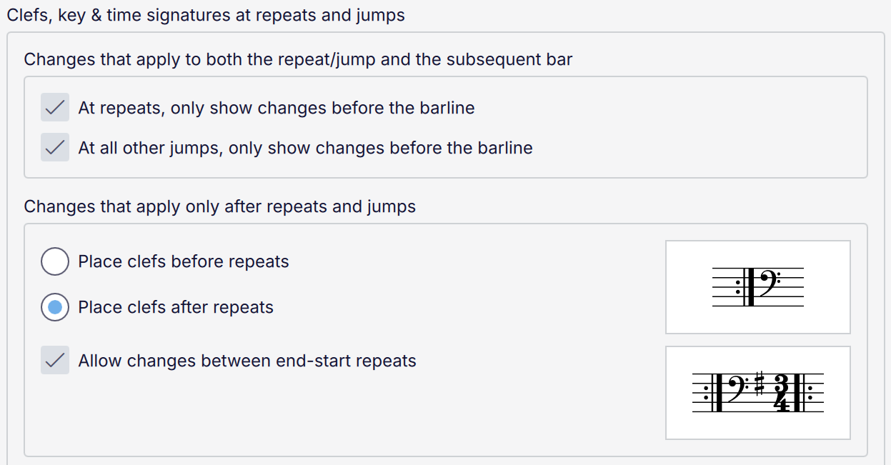
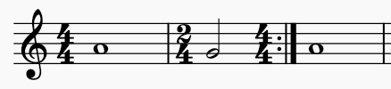
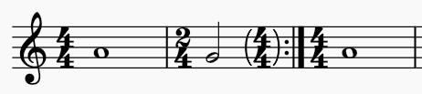
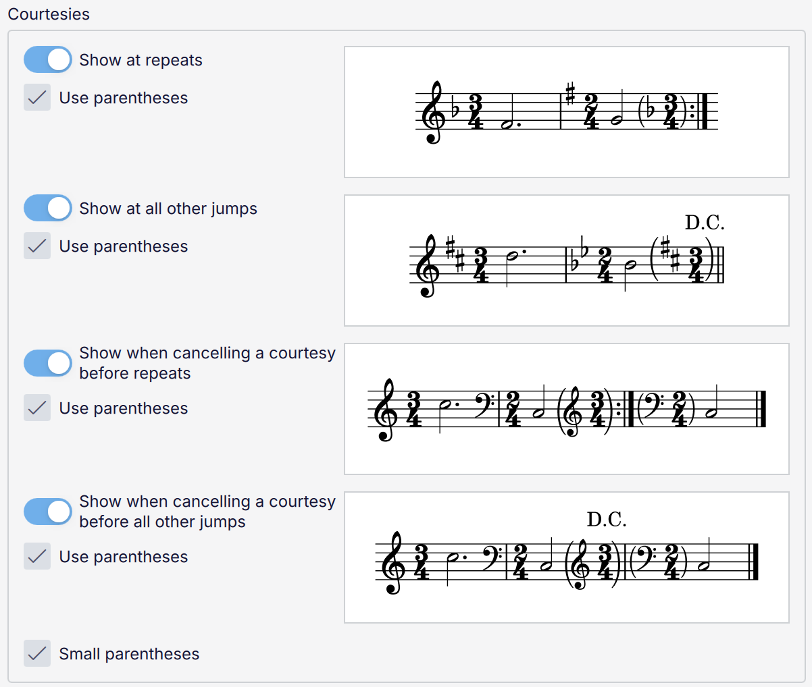

反复和跳转处的变更与提示性记号
概述
反复和跳转处的谱号、调号和拍号变更的排版和样式可能是一个复杂的问题。MuseScore Studio 提供了一系列选项来配置你希望它们在何时、何地出现。这些选项位于 样式 -> 格式 -> 谱号、调号与拍号 中。
谱号、调号和拍号变更

同时适用于反复/跳转及其后小节的变更：有时，谱号、调号或拍号的变更既适用于跳转的目的地（例如结束反复小节线或“到 Coda”），也适用于继续演奏时。目前有两种记谱选项：
- 如果勾选该选项：只在反复/跳转之前显示一次变更
- 如果取消勾选该选项：在反复/跳转之后显示变更，但允许在反复/跳转之前也显示一个提示性变更。提示性记号是否实际显示，以及如果显示是否加括号，取决于 提示性记号设置（见下文）。
你可以分别为反复和所有其他类型的跳转配置此行为。以下示例演示了反复：

选项已勾选

选项未勾选
如果你在下方 提示性记号 中关闭 在反复处显示，提示性记号会消失，导致变更只出现在跳转之后：

选项未勾选且提示性记号已禁用
仅适用于反复和跳转之后的变更 用于变更只适用于继续演奏时的情况。然而，即使在这种情况下，有些风格仍偏好将谱号放在小节线之前（其“通常”位置）。因此提供了 将谱号放在反复之前 和 将谱号放在反复之后（默认）选项。
最后，允许在结束-开始反复之间变更 在勾选时，如果变更在返回反复起点时不适用，则允许将结束-开始反复小节线拆分为结束反复和开始反复，并将变更置于两者之间。（如果选择了 将谱号放在反复之前，谱号仍可放在结束反复之前。）
提示性记号
可以在任何跳转之前显示提示性记号，以指示在跳转的目的地处谱号、调号和/或拍号不同。

有四个开关，构成两对选项：
- 在反复处显示：必要时在反复小节线之前显示提示性记号（以指示反复段落起点的谱号、调号或拍号不同）
- 在所有其他跳转处显示：必要时在所有其他类型的跳转（例如 D.C.、D.S.、到 Coda 等）之前显示提示性记号
- 在反复前取消提示性记号时显示：如果反复之前显示了提示性记号，但它并不在反复之后也适用，则显示一个提示性记号来“取消”前一个提示性记号
- 在所有其他跳转前取消提示性记号时显示：与上一选项相同，但用于所有其他类型的跳转。
每个开关还有一个 使用括号 复选框，指定提示性记号是否应括在括号内。当同一位置出现多个提示性项目（可能同时有谱号、调号和拍号）时，一对括号会括住所有项目。
小括号 选项指定括号应绘制为刚好包围其中项目的高度（预览图像使用此样式）。如果取消勾选，括号将从谱表下方 1sp 绘制到上方 1sp。